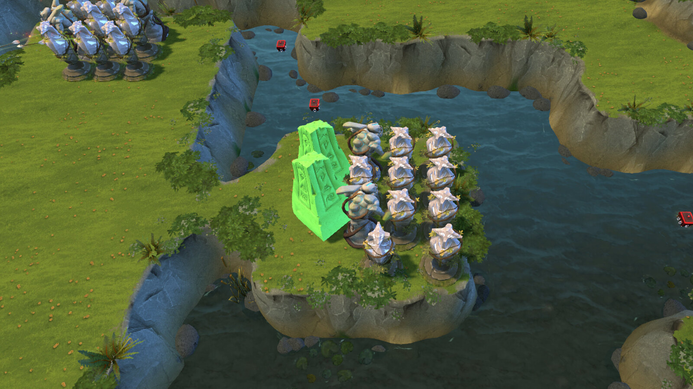
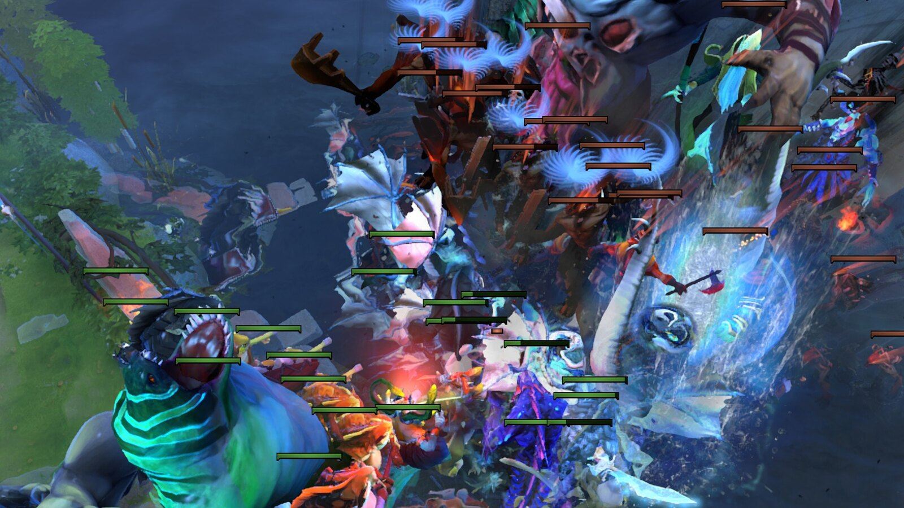
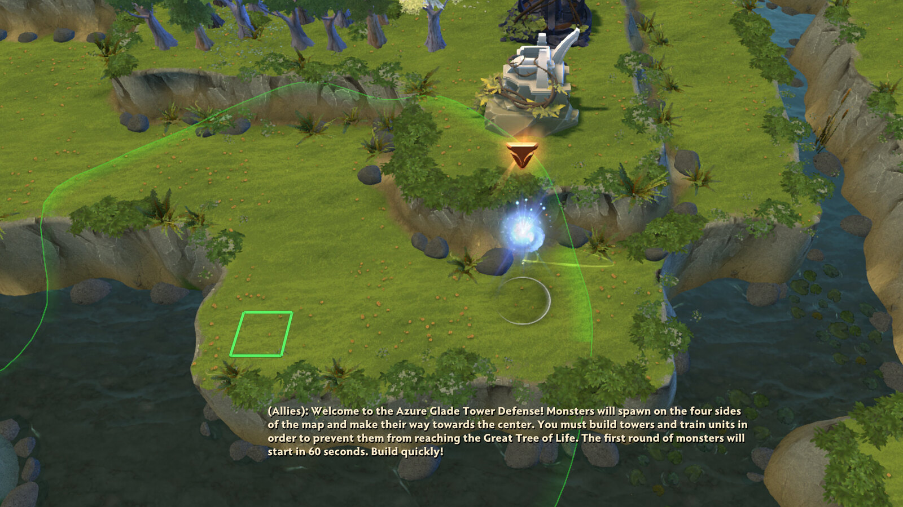
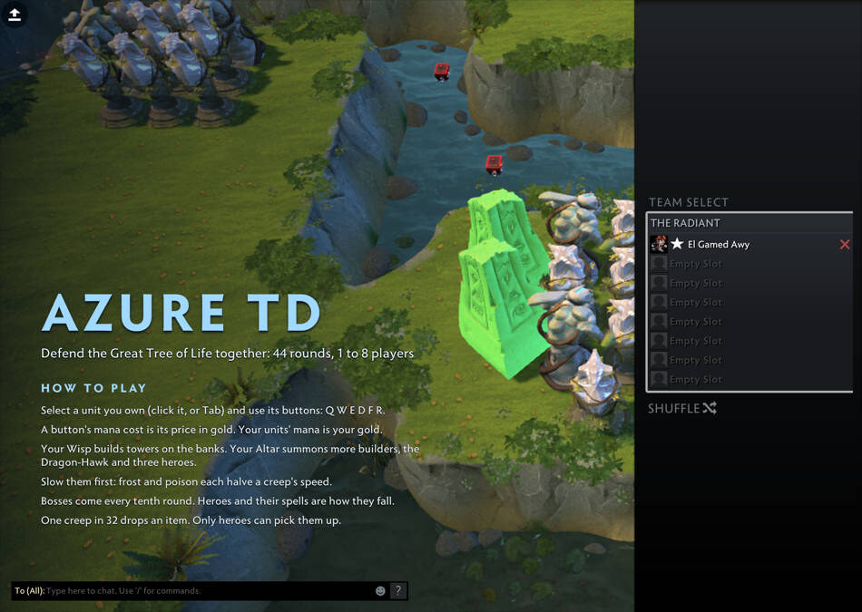

The last two posts here were about an agent building my guitar rig. This one is about what I did when I put the guitar down.
Custom maps are their own corner of gaming: tower defenses inside Warcraft III, tug-of-war maps like Desert Strike and Direct Strike inside StarCraft II's arcade. Dota 2 has an arcade too, and that's where I wanted them. Small problem: Valve's Workshop Tools for Dota 2 are Windows-only, and I'm on Omarchy. Skill issue? No. Platform issue.
So I opened Claude Code, running Claude Fable 5.2, and described the games I wanted.
TL;DR Two Dota 2 custom games are on the Steam Workshop: Dota Wars, a tug of war in the Desert Strike and Direct Strike tradition, and Azure TD, a remake of Warcraft III's Azure Tower Defense built from the original map's own data. Both were built from Linux, entirely through Claude Code. The repo's first commit is from Saturday 14 November. Dota Wars went public on Sunday, Azure TD on Monday. One of them went public before a human had played it through, and I'll get to that.

Azure TD, round 10. Towers on the banks, bosses wading in from the left, and Warcraft's terrain rebuilt out of Dota's cliffs and water.Dota Wars: draft an army, not a hero
Dota Wars is an original game in the tug-of-war genre that StarCraft's Desert Strike and Direct Strike made popular. You don't fight. You pick one of six factions, place blueprints on a grid, and every 30 seconds each blueprint sends a copy of itself down mid lane on the real Dota map. Armies meet in the river, heroes cast their own spells, and whoever keeps winning ground sieges the towers all the way to the Ancient.
It has six factions, 105 units and 33 heroes, plays 1v1, 2v2 or 3v3, and hides what the enemy is building behind fog of war. You find out what they chose when it marches at you.

Dota Wars, mid river. Nobody in this picture is being controlled by a player.This one I played while it was being built, firing off follow-ups mid-task. But a game like this lives on its numbers, and I wasn't going to tune 105 units by hand. My instruction was: "the simulator should suffice for 99% of tests". So balance is a test suite. A simulator plays whole matches, and assertions fail when a plan becomes dominant or a clear mistake stops being punished.
Azure TD: "as faithful as possible"
Then I got greedy. Azure Tower Defense is the co-operative tower defense Blizzard shipped with Warcraft III: The Frozen Throne. My whole brief was one message:
let's add azure td in there. Be as faithful to original game as much as possible with similar balance, pace, build up, map shape, look and feel, etc.
Faithful means the numbers can't be guessed. The download sites that still host the pristine Blizzard map turned the agent away, so it found three lightly edited copies of the map, dated 2006, 2008 and 2013, unpacked all three, and took the majority wherever they disagreed. They disagree on 39 object fields. Everything else in the game comes out of that data: all 44 rounds, 118 creeps, 27 towers, every cost, damage type, armour type and timer. There's a document in the repo that walks through the map's script, with line numbers.
The models are Dota's. No Blizzard art, sound or music is in it.
Valve's tools are Windows-only. Fine.
The first version of Azure TD ran on one of Dota's flat test maps with stone walls drawn where the canals should be, because compiling a real Dota map needs Valve's Windows compiler. Same story for interface panels and sounds. I typed seven words:
Use proton to run any windows stuff
It asked my running Steam client for the Windows half of Dota 2 and the Workshop Tools (about 7 GB), and now runs Valve's resource compiler under Proton from a shell script. Panels, sounds and maps all compile on Linux.
Then it turned Warcraft's terrain into a Dota map with a script. The Warcraft map is a grid of cliff levels, water flags and trees. Dota's terrain is a grid of tiles twice as coarse. The script reads one, writes the other, and the compiler builds it in about a minute: canals with water in them, banks, the wooded rim, trees where Warcraft has them.
Did it line up? It checked, in the running game: all 9,124 tower spots from Warcraft's build grid sit up on a bank in the Dota terrain, and creeps wade the canals at 264 against the 270 the rules say. The gap is the first step's acceleration.

The placement preview: the spot snaps to Warcraft's build grid, green where a tower can stand, with its range around it.Testing a game nobody is playing
Here's the part I find wild. An agent can't sit down and play Dota, so it built its own ways of knowing whether the game works:
- A strict fake of the Dota API. It errors on anything it doesn't implement, so the tests can't pass by accident. Azure TD has 71 of them, Dota Wars 122.
- A check against the game's own binary. Every API name the Lua uses is looked up in Dota's server library. That's how it caught a constant the game doesn't have: it had written
DOTA_ABILITY_TYPE_ULTIMATE, and Dota calls itABILITY_TYPE_ULTIMATE. - A whole-game simulator. A scripted player against all 44 rounds, in a few seconds instead of an hour.
- The real engine, driven by script. It launches Dota, gives units the same orders the HUD would send, fast-forwards, reads the console log and takes screenshots. It told a hero to spend a skill point, to pick up a pair of Gloves of Haste, and to summon a Tornado, then read back what happened: attack time from 1.34 to 1.10 seconds, creeps at 108 of 270 speed, three of four lifted off the ground.
The screenshots earned their keep. Late on, one of them showed the lobby header reading #addon_game_name, and the hero I'd been told was the Azure Witch was labelled "Medusa". Dota only reads a custom game's text file when it's written exactly the way it expects, byte-order mark and all. Ours wasn't, so every name and tooltip in the game had been silently falling back. No test caught that. A picture did.
The music is Gemini's
At some point I asked: "Why no music or cinematics?" Fair answer: Warcraft's music is Blizzard's and can't ship. So I had Google's Gemini generate three tracks, Crowns of Fallen Gods, Siege of the Fallen Keep and Last Rites of the Guard, and dropped them into the chat one by one. "Made a soundtrack for you."
They take turns now. The music changes at rounds 11, 21 and 31, where the original changed its own, and the last track takes over for the boss marathon from round 40. To check that the first one was actually audible, the agent recorded the machine's audio and matched it against the file. Type -music if you disagree with my taste.

The loading screen. The tips sit on the left because Dota's team list covers the right, which it found out from a screenshot of its first attempt.What it can't do (yet)
It's not finished, and I'd rather say so up front:
- Azure TD went public before anyone had played it through. I asked for it to be published "once it's all working well". It uploaded the game as private and told me why: every check had been a script, no person had played it, and multiplayer was untested. I read that and typed "Make it public". So that one's on me.
- Nobody has won it. The scripted player builds towers only. It gets through the early rounds, and the simulator has it dying around round 33. From round 20 the bosses need what a script doesn't do: heroes chasing them with Sleep, Slow, the Tornado and Death and Decay. Whether a good player wins alone, as in Warcraft III, is unknown.
- Multiplayer is untested. One to eight players is what the map says. One is what has been run in the real game.
- Some of it is a reading. The original drops "a random level 5 item" from one creep in 32. Which fifteen items that means is an interpretation of Warcraft's stock tables, and the game's own docs say so.
- Dota Wars shipped without its leaderboard. The service is written. It isn't running.
I also asked it to make sure the name wouldn't get us into trouble. It kept "Azure TD", wrote down why, and was straight with me: this is a fan remake that isn't affiliated with Blizzard or Valve, the design and names of the original are Blizzard's, and the realistic worst case is a takedown request. It also said that was its reading and not legal advice.
We did it (mostly)
Last time, an agent built my guitar rig and I just played. This time it extracted a Warcraft III map's data from three surviving copies, ran Valve's Windows compiler under Proton, rebuilt Warcraft's terrain as a Dota map, published to the Workshop from a Python script talking to my Steam client, and then told me honestly which parts no human had checked. I described what I wanted, had Gemini make some music and said "Make it public". Claude Code running Claude Fable 5.2 did the rest, this write-up included.
Both games are on the Workshop:
The code for both lives in one repo: github.com/saada/dota-custom-games.
If you beat round 44, tell me. As far as I know, you'd be the first.